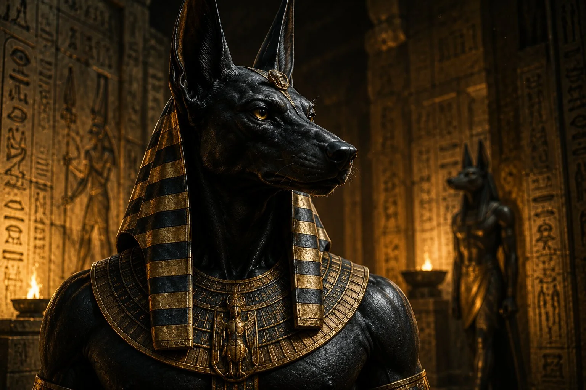
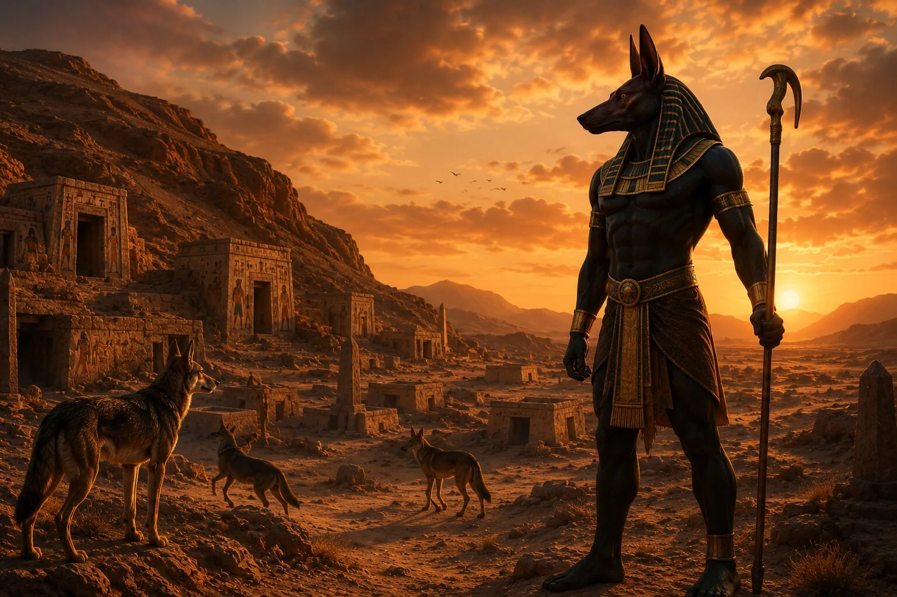
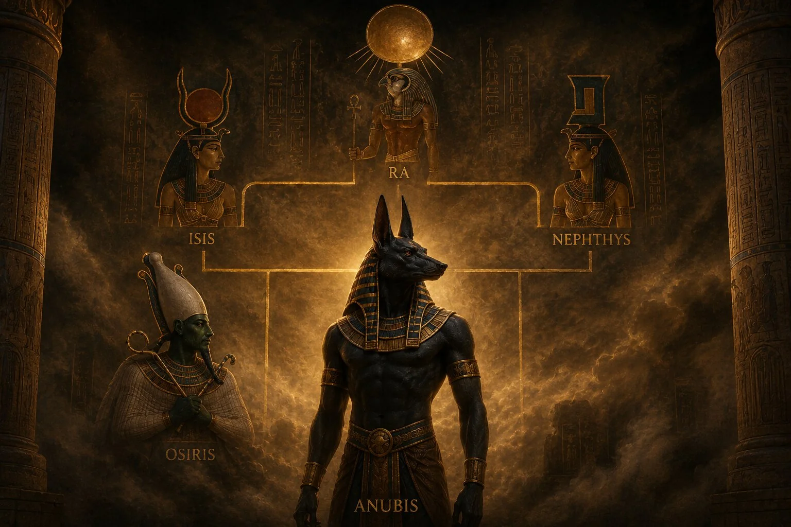
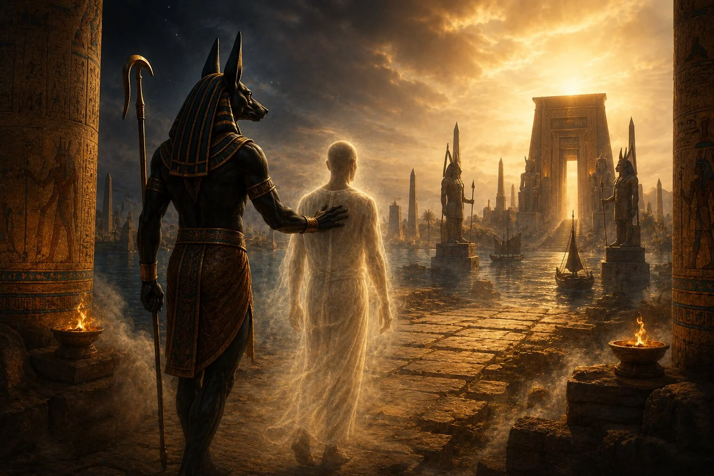
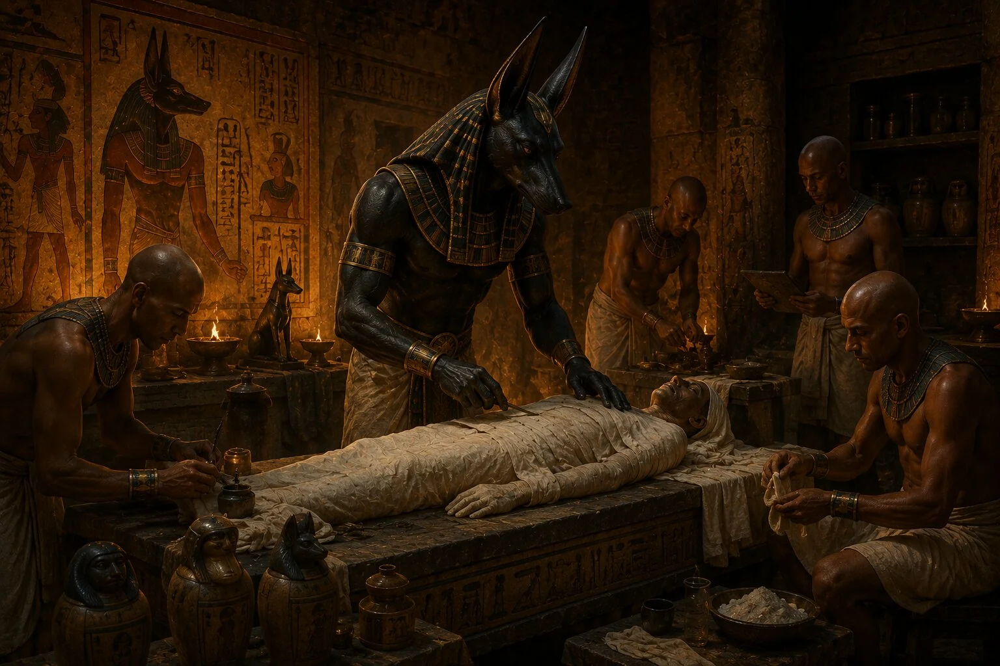
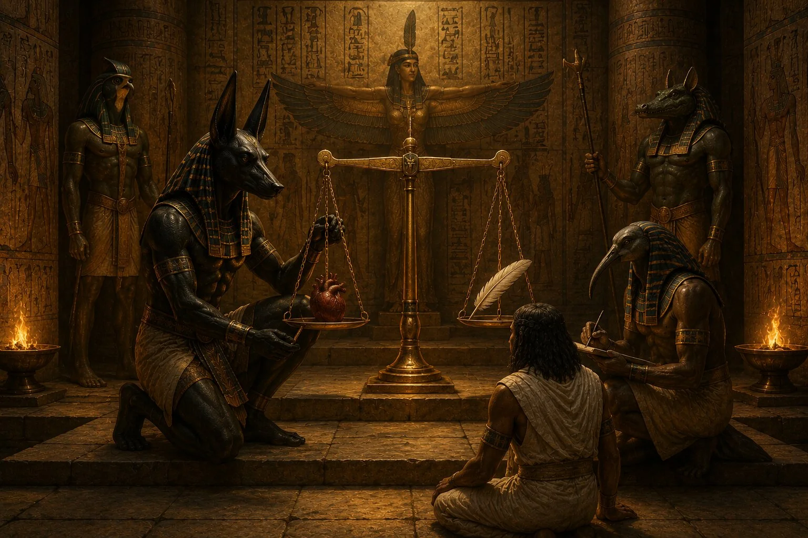
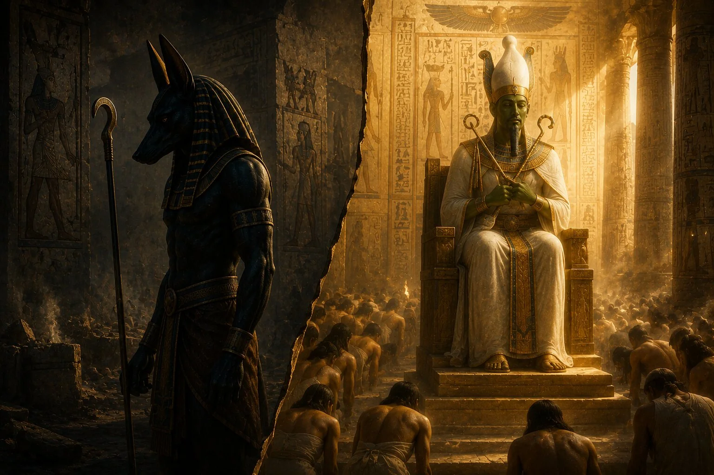
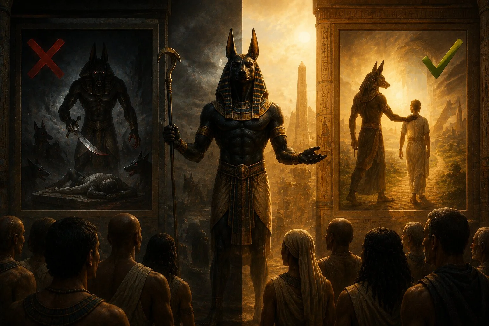

Bugün Antik Mısır denildiğinde akla gelen ilk figürlerden biri piramitlerse, diğeri büyük ihtimalle Anubis'tir. Siyah renkli çakal başı, insan bedeni ve gizemli görünümüyle tasvir edilen bu tanrı, binlerce yıl boyunca insanların hayal gücünü beslemeyi başarmıştır. Modern filmlerde, video oyunlarında ve popüler kültürde çoğu zaman karanlık bir ölüm tanrısı olarak gösterilse de, Antik Mısırlıların gözünde Anubis'in rolü bundan çok daha farklıydı.
Aslında Anubis'in hikâyesi, ölümün kendisinden çok ölümden sonraki yolculukla ilgilidir. O, mezarları koruyan, ölülerin ruhlarına rehberlik eden ve mumyalama ritüellerinin kutsal koruyucusu olarak görülen bir tanrıydı. Antik Mısır'ın karmaşık inanç sistemi içinde ölüm korkulması gereken bir son değil, yeni bir yaşamın başlangıcı olarak kabul edildiğinden, Anubis de bu geçiş sürecinin en önemli figürlerinden biri hâline gelmişti.
Peki Anubis kimdi? Neden çakal başlı olarak tasvir ediliyordu? Mumyalama ritüelleriyle nasıl ilişkilendirildi? Ve binlerce yıl sonra bile neden hâlâ Antik Mısır'ın en tanınan sembollerinden biri olmaya devam ediyor?
Bu soruların cevapları bizi Antik Mısır'ın ölüm anlayışının merkezine götürüyor.
Anubis Kimdir?
Anubis, Antik Mısır dininde ölüm, cenaze ritüelleri ve mezarların korunmasıyla ilişkilendirilen en eski tanrılardan biridir. Eski Mısır dilinde adı genellikle "İnpu" ya da "Anpu" olarak geçer. Yunanlar ise bu tanrıyı daha sonra "Anubis" adıyla anmaya başlamış ve günümüze ulaşan isim de bu olmuştur.
Mısır tarihinde Anubis'in kökenleri oldukça eski dönemlere uzanır. Hatta bazı araştırmacılar onun, Osiris kültü yaygınlaşmadan önce ölümle ilişkilendirilen en önemli tanrı olduğunu düşünmektedir. Bu durum, Anubis'in Mısır dinindeki yerinin ne kadar köklü olduğunu göstermesi açısından önemlidir.
Ancak Anubis'i yalnızca bir ölüm tanrısı olarak tanımlamak eksik olur. Çünkü Antik Mısırlılar için ölüm tek başına anlam taşıyan bir olay değildi. Önemli olan, ölümden sonra başlayan yolculuktu. Anubis de tam olarak bu yolculuğun koruyucusu olarak görülüyordu. Onun görevi ölüleri cezalandırmak ya da onlara hükmetmek değil, onları öteki dünyaya güvenli şekilde ulaştırmaktı.
Bu nedenle Antik Mısır sanatında Anubis çoğu zaman mezarların yanında, mumyalama sahnelerinde veya ölümden sonraki yargılamanın tasvir edildiği sahnelerde karşımıza çıkar.
Anubis Neden Çakal Başlı Olarak Tasvir Ediliyordu?

Antik Mısır tanrılarının birçoğu hayvanlarla ilişkilendirilmiştir. Horus şahinle, Bastet kediyle, Sobek ise timsahla temsil edilirdi. Anubis'in sembolü ise çakaldı.
İlk bakışta bu seçim garip görünebilir. Ancak bunun arkasında oldukça mantıklı bir neden bulunur.
Antik Mısır'da mezarlıklar genellikle çölün kenar bölgelerine kuruluyordu. Bu alanlarda yaşayan çakallar ve diğer yabani köpekgiller zaman zaman mezarlara yaklaşabiliyor, hatta gömü alanlarını kazabiliyordu. Mısırlılar bu hayvanları sık sık mezarlık çevresinde gördükleri için zamanla onları ölüm dünyasıyla ilişkilendirmeye başladı.
Ancak ilginç bir şekilde çakal, bir tehdit olarak görülmek yerine koruyucu bir sembole dönüştü. Mısırlılar, mezarları rahatsız eden hayvanların gücünü kendi taraflarına çekmek istemiş olabilirler. Böylece çakal başlı bir koruyucu tanrı fikri ortaya çıktı.
Anubis'in çoğu tasvirde siyah renkte gösterilmesi de tesadüf değildir. Siyah renk bugün birçok kültürde ölümle ilişkilendirilse de Antik Mısır'da aynı zamanda yeniden doğuşu ve Nil'in verimli topraklarını simgeliyordu. Bu nedenle Anubis'in siyah rengi yalnızca ölümü değil, ölümden sonra başlayacak yeni yaşamı da temsil ediyordu.
Anubis'in Kökeni ve Ailesi

Antik Mısır mitolojisinde tanrıların aile ilişkileri zaman içinde değişiklik gösterebiliyordu. Bu nedenle Anubis'in kökeniyle ilgili farklı anlatılar bulunur.
En yaygın anlatıya göre Anubis, Nephthys ile Osiris'in oğludur. Mitolojiye göre Nephthys, Osiris'in eşi olan İsis'in kılığına girerek Osiris'i baştan çıkarmış ve bu birliktelikten Anubis doğmuştur. Daha sonra İsis, çocuğu koruyup büyütmüş ve Anubis'in yetişmesinde önemli rol oynamıştır.
Bazı daha eski metinlerde ise Anubis'in doğrudan Ra'nın oğlu olduğu ya da farklı ilahi soylarla ilişkilendirildiği görülür. Bu çeşitlilik, Mısır dininin binlerce yıl boyunca değişerek gelişmesinden kaynaklanmaktadır.
Ancak farklı anlatılar olsa da Anubis'in Osiris mitolojisiyle bağlantısı zamanla o kadar güçlenmiştir ki, sonraki dönemlerde onun kimliği büyük ölçüde Osiris kültünün bir parçası hâline gelmiştir.
Bu durum özellikle mumyalama geleneğinin açıklanmasında önemli bir rol oynar.
Anubis'in Görevi Neydi?

Anubis'in Antik Mısır dinindeki rolünü anlamak için onu modern anlamda bir "ölüm tanrısı" gibi düşünmemek gerekir. Günümüzde ölümle ilişkilendirilen tanrılar genellikle insanların yaşamlarını sonlandıran ya da ölüler diyarını yöneten varlıklar olarak hayal edilir. Oysa Anubis'in görevi bundan oldukça farklıydı.
Mısırlılar için ölüm, varoluşun sona erdiği bir nokta değil, yeni bir aşamanın başlangıcıydı. Bu nedenle asıl önemli olan ölüm anı değil, ölümden sonra başlayan yolculuktu. Anubis de tam olarak bu geçiş sürecinin koruyucusu olarak görülüyordu. Onun görevi mezarları korumak, cenaze ritüellerini gözetmek ve ruhların öteki dünyaya güvenli şekilde ulaşmasına yardımcı olmaktı.
Bu yüzden Antik Mısır sanatında Anubis'i sık sık bir mezarın başında nöbet tutarken ya da bir ölünün yanında dururken görürüz. Bu sahneler ilk bakışta tehditkâr görünebilir. Ancak Mısırlılar için Anubis korkulması gereken bir figür değildi. Tam tersine, ölümden sonraki belirsiz yolculukta güvenilebilecek ilahi bir rehberdi.
Bu koruyucu rol, zamanla onu cenaze ritüellerinin ayrılmaz bir parçası hâline getirdi. Bir kişinin ölümden sonra başarılı bir şekilde öteki dünyaya geçebilmesi için bedeninin korunması, gerekli törenlerin eksiksiz yapılması ve ruhunun doğru şekilde yönlendirilmesi gerekiyordu. Anubis bütün bu sürecin kutsal koruyucusu olarak kabul ediliyordu.
Bu nedenle Antik Mısır'da bir cenaze töreni düşünmek, Anubis'i düşünmeden neredeyse imkânsızdı.
Anubis ve Mumyalama Arasındaki Bağlantı

Anubis'in adı günümüzde en çok mumyalama ile birlikte anılır. Bunun nedeni yalnızca cenaze törenleriyle ilişkilendirilmesi değildir. Antik Mısır mitolojisine göre Anubis, bizzat ilk mumyalama işlemini gerçekleştiren tanrı olarak kabul ediliyordu.
Bu inanç doğrudan Osiris efsanesiyle bağlantılıdır.
Mısır mitolojisinin en ünlü anlatılarından birine göre Osiris, kardeşi Set tarafından öldürülmüş ve bedeni parçalanarak Mısır'ın farklı bölgelerine dağıtılmıştı. Daha sonra İsis ve Nephthys bu parçaları bir araya toplamayı başarmıştı. İşte bu noktada Anubis devreye girer. Mitolojik anlatıya göre Osiris'in bedenini ilk kez koruyan ve onu ölümden sonraki yaşama hazırlayan kişi Anubis'tir.
Bu hikâye, Anubis'in neden mumyalamanın koruyucu tanrısı olarak görüldüğünü açıklar. Mısırlılar için mumyalama yalnızca teknik bir işlem değildi; kutsal kökenlere sahip bir ritüeldi. Bu nedenle cenaze törenlerinde görev yapan rahipler, zaman zaman Anubis'i temsil eden çakal başlı maskeler takıyordu. Böylece yapılan işlemin sıradan bir insan faaliyeti değil, ilahi bir geleneğin devamı olduğu vurgulanıyordu.
Mumyalama uygulamaları geliştikçe Anubis'in önemi de arttı. Çünkü bedenin korunması, ruhun ölümden sonraki yaşamını sürdürebilmesi için gerekli görülüyordu. Bu nedenle Anubis yalnızca bir koruyucu değil, aynı zamanda ölümden sonraki yaşamın mümkün hâle gelmesini sağlayan kutsal düzenin bir parçasıydı.
Antik Mısır'daki mumyalama ritüellerinin ayrıntılarını incelediğimizde, Anubis'in adının neden bu kadar sık karşımıza çıktığını daha iyi anlayabiliyoruz. Onun varlığı, ölümün son değil, yeni bir başlangıç olduğu düşüncesini temsil ediyordu.
Kalbin Tartılması Töreninde Anubis'in Rolü

Anubis'in en ünlü görevlerinden biri de ölümden sonraki yargılama sürecindeki rolüdür. Bu sahne günümüzde en iyi şekilde Ölüler Kitabı'nda bulunan tasvirlerden bilinmektedir ve Antik Mısır'ın ölüm anlayışını anlamak açısından büyük önem taşır.
Mısırlılar, ölümden sonra her insanın ilahi bir yargılamadan geçeceğine inanıyordu. Bu yargılamanın merkezinde ise kalp bulunuyordu. Çünkü kalp yalnızca bir organ olarak görülmüyor; kişinin anılarını, davranışlarını, karakterini ve ahlaki geçmişini taşıyan manevi merkez olarak kabul ediliyordu.
Yargılama sırasında kişinin kalbi, doğruluk ve düzen tanrıçası Ma'at'ın tüyüyle tartılıyordu. Eğer kalp tüyden ağır gelirse, kişinin yaşamı boyunca işlediği kötülüklerin ortaya çıktığı düşünülüyordu. Böyle bir durumda ruh sonsuz yaşama ulaşamıyordu.
Anubis bu sahnede yargıç değildir. Bu ayrıntı önemlidir çünkü popüler kültürde sıklıkla yanlış aktarılır. Onun görevi teraziyi gözetmek ve tartımın adil şekilde gerçekleşmesini sağlamaktır. Başka bir deyişle Anubis, ilahi düzenin tarafsız koruyucusu olarak hareket eder.
Tasvirlerde genellikle terazinin yanında duran figür olarak görülmesinin nedeni budur. O, sonucu belirleyen değil; sonucun doğru şekilde ortaya çıkmasını sağlayan kişidir. Bu özellik, Anubis'in karakteri hakkında da önemli ipuçları verir. Çünkü Mısır mitolojisinde onu kötü ya da zalim bir tanrı olarak gösteren anlatılar neredeyse yoktur. Aksine, adaletin ve düzenin korunmasına yardımcı olan güvenilir bir figür olarak karşımıza çıkar.
Kalbin tartılması sahnesi, Anubis'in yalnızca ölümle değil, ahlaki düzen ve adalet kavramlarıyla da ilişkili olduğunu göstermesi açısından son derece önemlidir.
Anubis Daha Sonra Neden Geri Plana Düştü?

Anubis, Antik Mısır dininin en eski ve en güçlü ölüm tanrılarından biri olarak ortaya çıkmıştı. Erken dönemlerde mezarların korunması, bedenin hazırlanması ve ölülerin öteki dünyaya geçişi denildiğinde akla gelen en önemli figürlerden biri oydu. Ancak Mısır dini durağan bir sistem değildi. Binlerce yıl boyunca değişti, farklı bölgelerde farklı tanrılar öne çıktı ve bazı tanrıların görev alanları zaman içinde başka figürlerle birleşti.
Anubis'in rolündeki en büyük değişim, Osiris kültünün güçlenmesiyle gerçekleşti. Osiris, öldürülüp yeniden dirilen tanrı olarak Antik Mısır'ın ölümden sonraki yaşam anlayışında merkezi bir figür hâline geldi. Onun hikâyesi, yalnızca bir tanrının ölümü ve dirilişi değil, bütün insanların ölümden sonra yeniden var olabileceği düşüncesinin mitolojik karşılığıydı.
Bu inanç yaygınlaştıkça Osiris, ölüler dünyasının hâkimi ve ölümden sonraki yaşamın en önemli tanrısı olarak öne çıktı. Böylece Anubis'in daha önce tek başına temsil ettiği bazı alanlar Osiris kültünün içinde yeniden şekillendi.
Fakat bu, Anubis'in önemini tamamen kaybettiği anlamına gelmez. Daha doğru ifade etmek gerekirse, Anubis'in görevi değişti. O artık ölümden sonraki dünyanın en yüce hâkimi olarak değil, bu dünyaya geçişin koruyucusu ve cenaze ritüellerinin kutsal gözeticisi olarak varlığını sürdürdü.
Bu ayrım oldukça önemlidir. Çünkü Antik Mısır dininde bir tanrının başka bir tanrı tarafından tamamen silinmesi sık görülen bir durum değildi. Tanrıların görev alanları çoğu zaman iç içe geçer, yeni inanç biçimleri eski figürleri farklı roller içinde yaşamaya devam ettirirdi.
Anubis de tam olarak böyle bir dönüşüm yaşadı. Osiris ölümden sonraki yaşamın kralı hâline gelirken, Anubis o krallığa giden yolun rehberi olarak kaldı. Bu nedenle cenaze ritüellerinde, mumyalama sahnelerinde ve kalbin tartılması tasvirlerinde güçlü varlığını korudu.
Belki de Anubis'in binlerce yıl boyunca unutulmamasının nedeni budur. O, büyük tahtın sahibi olmayabilir; fakat ölümden sonraki yolculuğun en kritik eşiğinde duran figür olmaya devam etti.
Anubis Hakkında Yaygın Yanlış Bilgiler

Anubis'in günümüzde bu kadar popüler olması, onun hakkında birçok yanlış bilginin de yayılmasına neden oldu. Özellikle filmler, oyunlar ve fantastik anlatılar Anubis'i çoğu zaman karanlık, cezalandırıcı ya da uğursuz bir figür gibi gösterir. Oysa Antik Mısır kaynaklarına ve tasvirlerine baktığımızda karşımıza bundan çok daha farklı bir tanrı çıkar.
En yaygın yanlışlardan biri, Anubis'in "ölüm tanrısı" olduğu düşüncesidir. Bu ifade tamamen yanlış sayılmaz, çünkü Anubis ölümle ilişkili bir tanrıdır. Ancak onu yalnızca ölüm tanrısı olarak tanımlamak eksik ve yanıltıcıdır. Anubis daha çok cenaze ritüellerinin, mumyalamanın, mezarların korunmasının ve ölümden sonraki geçişin tanrısı olarak anlaşılmalıdır.
Bir diğer yanlış inanış, Anubis'in kötü bir tanrı olduğu fikridir. Modern kültürde çakal başlı siyah bir figür gördüğümüzde onu kolayca korkutucu ya da şeytani olarak yorumlayabiliyoruz. Fakat Antik Mısırlılar için siyah renk yalnızca karanlığı değil, verimliliği ve yeniden doğuşu da çağrıştırıyordu. Nil'in taşkınlarından sonra geride bıraktığı koyu renkli verimli topraklar, yaşamın devamlılığını simgeliyordu. Bu yüzden Anubis'in siyah görünümü yalnızca ölümle değil, ölümden sonraki yenilenmeyle de ilişkilendirilebilir.
Anubis'in lanetlerle bağlantılı olduğu fikri de büyük ölçüde modern popüler kültürün ürünüdür. Antik Mısır mezarlarında koruyucu büyüler, uyarılar ve ritüel metinler bulunabilirdi; ancak Anubis'i doğrudan insanlara musallat olan lanetli bir varlık gibi düşünmek tarihsel gerçekliği yansıtmaz. Onun görevi mezarı korumak ve ölüye rehberlik etmekti. Bu koruyucu rol, modern anlatılarda çoğu zaman yanlış biçimde korku unsuruna dönüştürülmüştür.
Anubis hakkında yapılan bir başka hata da onu tek başına bütün ölüler dünyasının yöneticisi gibi düşünmektir. Oysa özellikle Osiris kültünün yükselişinden sonra ölümden sonraki dünyanın merkezinde Osiris yer almıştır. Anubis ise bu sistemde son derece önemli ama daha belirli bir role sahipti. O, ruhun yargılanma sürecinde düzeni gözeten, mumyalama ritüellerini kutsallaştıran ve mezarları koruyan figürdü.
Bu yanlış bilgileri düzeltmek, Anubis'i daha az ilginç hâle getirmez. Tam tersine, onu daha anlamlı kılar. Çünkü Anubis'in gerçek rolü, popüler kültürün sunduğu karanlık figürden çok daha derindir. O, Antik Mısırlıların ölüm karşısında geliştirdiği düzen, koruma ve süreklilik fikrinin en güçlü sembollerinden biridir.
Anubis'in Günümüzdeki Mirası
Anubis bugün artık bir tapınağın duvarında ya da bir mezar sahnesinde kalmış unutulmuş bir tanrı değildir. Aksine, Antik Mısır denildiğinde dünyanın hemen her yerinde tanınan birkaç figürden biri hâline gelmiştir. Bunun nedeni yalnızca çakal başlı görünümünün dikkat çekici olması değildir. Anubis, modern insanın ölüm ve bilinmeyenle kurduğu ilişkiye de dokunan bir figürdür.
Müzelerde Anubis tasvirleriyle karşılaşan insanlar çoğu zaman aynı şeyi hisseder. Bu figür hem yabancıdır hem de anlaşılır. Çünkü ölümden sonra ne olacağı sorusu yalnızca Antik Mısırlılara ait bir soru değildir. İnsanlık tarihinin her döneminde insanlar bu soruya cevap aramıştır. Anubis'in hâlâ ilgi çekmesinin nedeni de büyük ölçüde budur.
Modern filmler ve oyunlar Anubis'i çoğu zaman daha karanlık ve fantastik bir karaktere dönüştürse de, bu popülerlik onun tarihsel önemini tamamen gölgeleyemez. Tam tersine, birçok insan Anubis'i ilk kez popüler kültür aracılığıyla tanır ve daha sonra gerçek Mısır mitolojisini merak etmeye başlar.
Bu açıdan Anubis, geçmiş ile bugün arasında ilginç bir köprü kurar. Bir yandan Antik Mısır'ın ölüm ritüellerini, mumyalama geleneğini ve öteki dünya inancını temsil eder. Diğer yandan modern dünyanın mitolojiye duyduğu ilgiyi canlı tutar.
Fakat Anubis'i gerçekten anlamak için onu yalnızca korkutucu bir sembol olarak görmekten vazgeçmek gerekir. O, karanlığın değil, geçişin tanrısıdır. Ölümün değil, ölümden sonraki düzenin koruyucusudur.
Ve belki de bu yüzden binlerce yıl sonra bile hâlâ unutulmamıştır.
Sonuç: Anubis Neden Bu Kadar Önemliydi?
Anubis'i önemli yapan şey yalnızca çakal başlı görünümü değildir. Onu Antik Mısır dininin en güçlü figürlerinden biri yapan asıl unsur, ölümle yaşam arasındaki en kritik eşikte durmasıdır.
Mısırlılar için ölüm, insanın yok olduğu bir son değildi. Beden korunmalı, ruh yönlendirilmeli, kalp tartılmalı ve kişi ölümden sonraki yaşama hazırlanmalıydı. Anubis bütün bu sürecin merkezinde yer alıyordu.
O mezarların bekçisiydi, mumyalamanın koruyucusuydu, ruhların rehberiydi ve ilahi yargılamada düzenin gözeticisiydi. Bu yüzden onu yalnızca ölüm tanrısı olarak tanımlamak yeterli değildir. Anubis, Antik Mısır'ın ölüm karşısında geliştirdiği en güçlü inanç sistemlerinden birinin sembolüdür.
Bugün onu hâlâ hatırlamamızın nedeni de budur. Anubis bize yalnızca Antik Mısır'ın tanrılarını değil, insanların ölüm karşısında nasıl anlam aradığını da gösterir. Binlerce yıl önce mezar duvarlarına çizilen bu çakal başlı figür, aslında insanlığın en eski sorularından birine eşlik etmeye devam eder:
Ölümden sonra ne olur?
Sık Sorulan Sorular
Anubis ne tanrısıdır?
Anubis, Antik Mısır'da cenaze ritüelleri, mumyalama ve ölülerin korunmasıyla ilişkilendirilen tanrıdır. Günümüzde sıklıkla "ölüm tanrısı" olarak anılsa da asıl görevi ölümden sonraki yolculukta ruhlara rehberlik etmek ve mezarları korumaktır.
Anubis neden çakal başlıdır?
Antik Mısır mezarlıkları genellikle çöl kenarlarında bulunuyordu ve bu bölgelerde çakallar sıkça görülüyordu. Mısırlılar zamanla bu hayvanları ölüm dünyasıyla ilişkilendirdi ve mezarların koruyucusu olarak gördükleri Anubis'i çakal başlı şekilde tasvir etmeye başladı.
Anubis kötü bir tanrı mıydı?
Hayır. Modern filmler ve oyunlar Anubis'i çoğu zaman korkutucu veya karanlık bir figür gibi gösterse de Antik Mısırlılar onu koruyucu bir tanrı olarak görüyordu. Anubis'in görevi ölüleri cezalandırmak değil, onların güvenli şekilde öteki dünyaya ulaşmasına yardımcı olmaktı.
Anubis ve mumyalama arasındaki ilişki nedir?
Antik Mısır mitolojisine göre Anubis, Osiris'in bedenini koruyarak ilk mumyalama işlemini gerçekleştiren tanrı olarak kabul edilirdi. Bu nedenle mumyalama ritüellerinin koruyucusu hâline gelmiş ve cenaze törenlerinde önemli bir yere sahip olmuştur.
Kalbin Tartılması Töreni'nde Anubis'in görevi neydi?
Mısırlılar, ölümden sonra kişinin kalbinin Ma'at'ın tüyüyle tartıldığına inanıyordu. Anubis bu törende teraziyi gözeten ve yargılamanın adil şekilde gerçekleşmesini sağlayan tanrı olarak tasvir edilirdi.
Anubis ve Osiris arasındaki fark nedir?
Anubis daha çok cenaze ritüelleri, mumyalama ve ruhların yolculuğuyla ilişkilendirilirken, Osiris ölümden sonraki dünyanın hükümdarı olarak kabul edilirdi. Zamanla Osiris kültünün güçlenmesiyle birlikte iki tanrının görevleri birbirini tamamlayan bir yapıya dönüşmüştür.
Anubis gerçekten ölüm tanrısı mıydı?
Kısmen evet, ancak bu tanım eksiktir. Anubis yalnızca ölümle değil, ölümden sonraki yaşam, cenaze ritüelleri, mezarların korunması ve ruhların rehberliğiyle de ilişkilendiriliyordu. Bu nedenle onu sadece ölüm tanrısı olarak tanımlamak Antik Mısır inancını tam olarak yansıtmaz.
Kaynakça
- Assmann, Jan. Death and Salvation in Ancient Egypt. Cornell University Press, 2005.
- Hart, George. The Routledge Dictionary of Egyptian Gods and Goddesses. Routledge, 2005.
- Pinch, Geraldine. Egyptian Mythology: A Guide to the Gods, Goddesses, and Traditions of Ancient Egypt. Oxford University Press, 2004.
- Wilkinson, Richard H. The Complete Gods and Goddesses of Ancient Egypt. Thames & Hudson, 2003.
- Taylor, John H. Death and the Afterlife in Ancient Egypt. University of Chicago Press, 2001.
- Budge, E. A. Wallis. The Gods of the Egyptians. Dover Publications.
- British Museum – Ancient Egyptian Religion Collection.
- The Metropolitan Museum of Art – Egyptian Art Collection.
- University College London (UCL) – Digital Egypt for Universities Project.
- Griffith Institute, Oxford – Ancient Egyptian Religious Texts Archive.